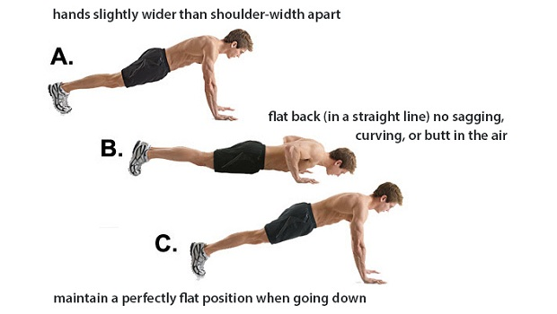
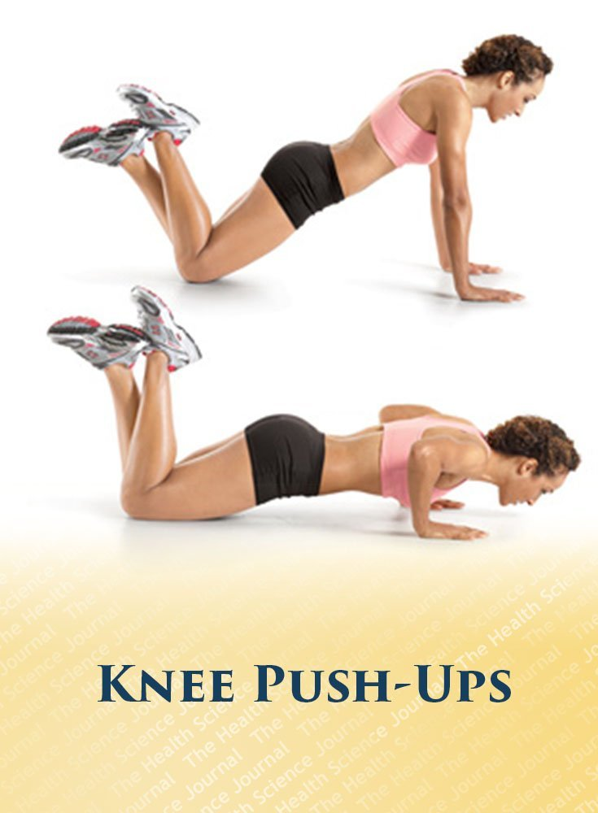
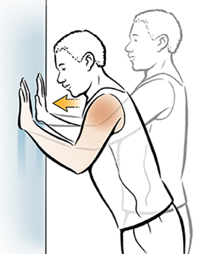

The types of pushups
Full pushups

A full pushup is either a full from handstand, down to chest on the ground back up.
Or can be from the ground, up fully in the air back to the ground again.
This type of pushup is worth maximum points for your team
Knee pushups

A knee pushup is similar to a full pushup, except you pivot on your knees instead of your feet.
This type of pushup should be done if you have difficulties doing full pushups.
You can do this type of pushup in combination with full pushups. E.G. you get too tired with the full pushups that you can now only do them from the knees.
If you are recovering from injury and have been doing wall pushups you may attempt a few of these as a part of your recovery.
This pushups are worth less than full pushups, but they will still help your team.
Wall pushups

These pushups are for people that can not do full or knee pushups. This can be due to injury or physical strength.
This type of pushup is where you push-off the wall. This might seem easy, but for people doing these types of pushups they will probably be difficult.
If you have been advised by a therapist to do wall pushups, you do them in the way they have advised to do them.
If you are able to do pushups from the knees, you should be doing those, or full pushups instead.
These are worth the least amount of points, however they are not as low to reflect their true ease for a healthy person.
You should only be doing these, if you can not do the other type
A word on cheating!
This entire system is based on honesty.
Cheating would just be stupid and rob you and others of a fun experience
It is the hope that this competition will be intense. That you will want to do more to push your team that much closer to victory.
This competition has been designed on purpose to fill you with a sense of urgency to motivate you to do more!
Please take this in the way it was intended to help motivate you to do more pushups and not artifically inflate your numbers.
This competition requires everybody to do the right thing!!
Some additional grey areas to clarify:
Your pushups should be entered in as soon as you do them. No storing up pushups to enter in later on.
You should only be doing wall pushups if you struggle to do knee pushups or are injured. If you are testing yourself to
see if you can do knee pushups and manage to do a couple but then find you have to do wall pushups instead that is OK.
But if you have no injuries and are capable of doing knee pushups you should do those instead.
If you are strong enough to do knee pushups all day long, then you should be doing full pushups
Have fun, play fair and may the best team win :)